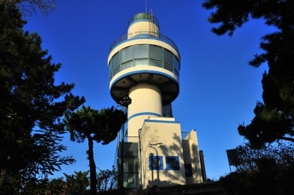
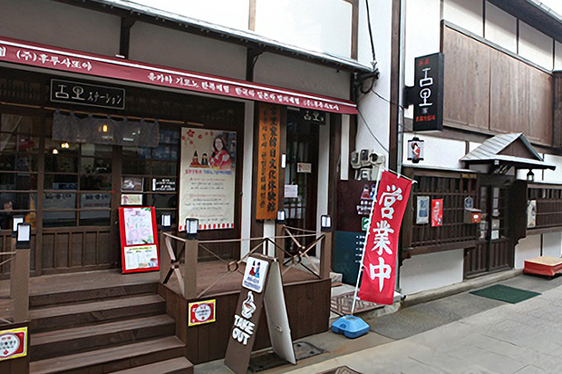
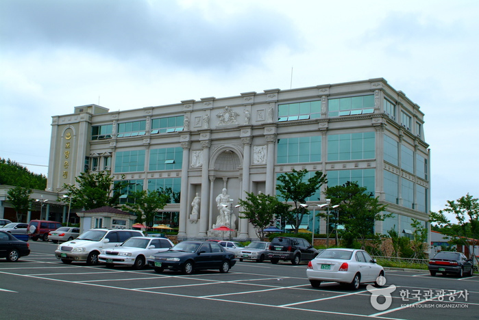
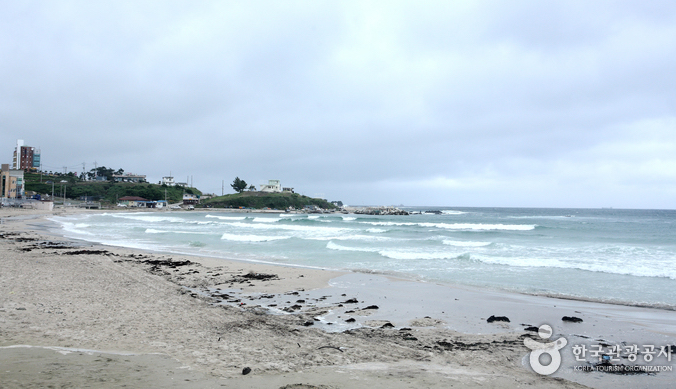

주요 관광지
-

환호공원
북부해수욕장 맨 끝 해안마을인 설머리 뒷동산에는 시민들이 즐길 수 있는 휴식공간인 환호해맞이 공원에는 해안절벽과 다양한 수목 등 온종일 볼거리와 즐길거리들이 즐비하다. 전망대를 중심으로 야외공연장 등 전망대에서 내려다 보이는 전경이 아름답다.
-

구룡포 일본인가옥거리
구룡포 일본인 가옥거리는 1883년 조선과 일본이 체결한 '조일통상장정' 이후 일본인이 조선으로 와서 살았던 곳으로 '일본인 가옥 거리'로 가옥 몇채만 남아 있던 곳을 포항시가 '일본인가옥거리'로 조성한 곳이다. 일본의 다양한 차를 맛 볼수 있으며, 유카타 체험이 가능하다.
-

포항온천
포항온천은 지하 620m에서 발굴한 약알칼리성 천연광천수의 식염유황온천을 사용하고 있는 것이 특징이며 피부미용 효과를 볼 수 있다. 이태리 트래비분수를 재현한 상징적인 건축물로서 인근에 위치한 환호 해맞이공원과 북부해수욕장, 죽천, 칠포바닷가와 연계되는 포항의 명소이다.
사우나 및 찜질방 입장권 구매 가능 -

구룡포해수욕장
구룡포는 신라 진흥왕 때 장기 현감이 고을을 순찰중 용주리를 지날 때 별안간 하늘에서 천둥이 치고 폭풍우가 휘몰아쳐서 급히 민가로 대피했는데, 이 때 용두산 해안 바다에서 아홉마리 용이 승천하였다고 한다. 이후, 아홉마리 용이 승천한 포구라 하여 구룡포라 부른다고 한다. 구룡포의 지리적 특성은, 구릉지가 많고 평지가 적으며, 겨울은 따뜻하고 여름은 서늘한 기후로 15.8km의 긴 해안선에 둘러싸여 있다.
맛집 및 카페
-

포갈집
한식
주소 | 경북 포항시 북구 삼호로 213-1 -

러블랑
카페
주소 | 경북 포항시 북구 송라면 동해대로 3310 -
포항영일대샐러드 션델리 카페
카페
주소 | 경북 포항시 북구 대곡로29번길 10-7 102호